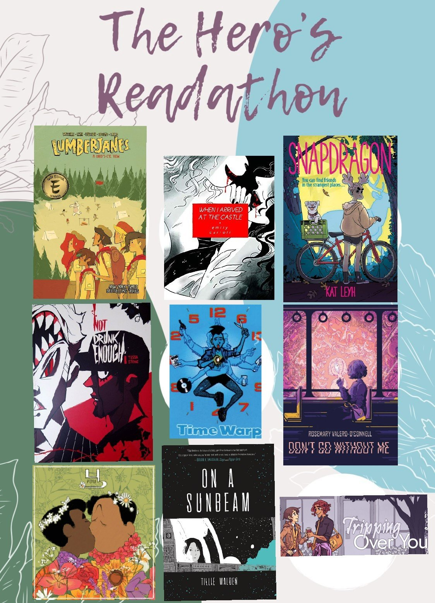

READATHON TBR
The Hero's Readathon TBR: troll/fae thief & vampire warrior
APRIL 30, 2020
The Hero's Readathon is a D&D-inspired readathon created by Sage from Sage Reads! To participate in this readathon, you first choose your character type (troll, fae, elf, demon, ghost, mermaid, werewolf, or vampire) and then choose your character class (warrior, theif, druid, healer, bard, ranger, necromancer, or clairvoyant). The type and class you choose for your character affects what you read for the challenge. Then, based on those limitations, you follow The Hero's Journey, which consists of nine reading prompts.
For more information on this readathon, you can watch Sage's video, or read this handy document they created. They also designed the beautiful bingo board that I used to make the following two janky collages of book covers.
I liked these ideas so much that I decided to try and read for two characters!
My first character is a troll/fae (meaning I will read only graphic novels/manga with LGBTQIA+ representation) who is a thief (meaning I won't purchase any works to read for the purposes of this readathon).
troll/fae thief TBR
CALL TO ACTION: read a book set outside of a house
For this prompt I will be continuing to read Lumberjanes! I am currently on the seventh volume and really love this raggedy band of adventurous girls. This graphic novel has atleast one sapphic couple is set at a summer camp, so I know it will definitely fit the prompt. I have a 30-day trial with comixology, so I can borrow a digital copy of the volume for free.
MEET YOUR MENTOR: read a book written by an author you admire
I will also be reading When I Arrived at the Castle by Emily Carroll. I have wanted to read Carroll's work for a long time but only recently have actually done so! I completely fell in love with Beneath the Dead Oak Tree, and I know I will be equally enamored with this horror comic about sapphic vampires. I purchased it a couple weeks ago, before this readathon was anounced, so it still counts!
CROSSING THE THRESHOLD: read a coming of age (or coming out) story
I have chosen to read Snapdragon by Kat Leyh. I know this graphic novel is middle grade, and I am pretty sure it is a coming of age story. I also believe it has LGBTQ+ rep in some capacity due to its tags on goodreads. I purchased this book a few months back and am excited to finally read it!TRIALS + FAILURES: read a book you've started and never finished
For this one I will finally be finishing Not Drunk Enough by Tessa Stone! I started this webcomic several months ago and only got maybe one chapter into it before abandoning it. Not because I didn't like it, but because I wasn't in the right headspace to properly appreciate how beautiful it is. I am fairly certain the two main guys end up in a relationship at some point. Note: this is a webcomic, but it has also been publishing in print volumes. I plan to read through the first volume, up until the most recent update.DEATH AND REBIRTH: read a book that has been on your TBR for over a year
I have owned a copy of ILYA's Time Warp: The End of the Century Club for almost three years! It was love at first sight when I found this gay punk graphic novel, and I genuinely don't understand how I've let this sit on my shelf for so long.
REVELATION: read a 5 star prediction
One of my favorite indie publishers, Shortbox, had a sale recently where I snagged a copy of Don't Go Without Me by Rosemary Valero-O'Connell. I loved this artist's work in Laura Dean Keeps Breaking Up with Me, and I know I will love this collection, too! While I generally trust Valero-O'Connell to fulfill all of my queer needs, goodreads tags again have affirmed that this includes LGBTQ+ rep.
ATONEMENT: read a book that broadens your worldview
Although this webcomic does not exist on goodreads, I will still be reading Puu (பூ ) by Nabi. I have been meaning to read this comic for a while, and as it is a gay muslim romance set in Tamil Nadu, India, written by a muslim trans man, it fits this prompt perfectly! I have loved what I've seen of Nabi's work and can't wait to see more.
GIFTS FROM THE GODS: read a book recommended by a booktube friend
Almost every booktuber I follow who has talked about queer comics has recommended On a Sunbeam by Tillie Walden. I have my own copy and am very excited to dive into this beautiful space adventure. From what I know of the representation, there is a character who uses they/them pronouns and atleast one sapphic relationship.
RETURN (CHANGED): read a book or author you have never heard of until now
In my quest to find a webcomic I hadn't heard of, I found Tripping Over You by Suzana Harcum and Owen White (a married lesbian couple)! This comic follows two main characters, one gay and one bisexual, and has "a focus on LGBT+ themes!"
In addition to my troll/fae thief character, my second character is a vampire who is also a warrior, meaning I will only read dark academia that are also thrillers. Note: all of the books I chose for these prompts were tagged as dark academia and as a thriller on goodreads. If they are not, in fact, dark academia thrillers then I will take no blame for the error!
vampire warrior TBR
CALL TO ACTION: read a book set outside of a house
This prompt was very easy to fill, because almost every dark academia book takes place at a boarding school or university of some kind. The blurb for The Rules of Attraction by Bret Easton Ellis begins explaining that it is "set at a small afluent liberal-arts college in New England eighties." I am looking forward to escaping my own home to the shenanigans at Camden College.
MEET YOUR MENTOR: read a book written by an author you admire
I am not entirely sure if I would say I admire V. E. Schwab, but I definitely recognize them as an influential author. To me, that counts enough for me to choose Vicious for this prompt. I know this book has a cult following, so I am excited to see what the hype is all about.
CROSSING THE THRESHOLD: read a coming of age (or coming out) story
Kate Weinberg's blurb for The Truants begins calling it a "seductive coming-of-age debut", so of course I chose it for this prompt! I am also interested in this book because, for the most part, it is set on a Mediterranean island. While this isn't a huge change, it is still a small depature from the New England or UK setting I have come to expect from dark academia.TRIALS + FAILURES: read a book you've started and never finished
About a year ago I picked up Kali Wallace's Shallow Graves, and I have decided to finally return to it for this prompt. I think this one might also be interesting because the main character is the one who has been murdered, so I think this new perspective will create some compelling storytelling.DEATH AND REBIRTH: read a book that has been on your TBR for over a year
I remember adding People Like Us by Dana Mele to my TBR before it was first published over two years ago! Excited to finally read this one, I am also interested in it as the book is YA and I believe has LGBTQ+ rep of some kind.
REVELATION: read a 5 star prediction
I'm not sure what it is about Affinity by Sarah Waters that intrigues me so much: that it has LGBTQ+ rep? That it is historical fiction? That it is considered gothic fiction? Because it is somehow all of these things at once? It is most likely because Sarah Waters has been described to me as "lesbian Charles Dickens"—I don't know how I could NOT love this book.
ATONEMENT: read a book that broadens your worldview
Because dark academia is known for centering ridiculous white men with wealthy backgrounds who face little to no consequences for their actions, this prompt was understandably difficult to fill. I have chosen to read Catherine House by Elisabeth Thomas. I am hoping that Thomas will challenge this trope as a Black author. If not, I am still looking forward to reading her work. Note: this is most likely going to be the only book I buy for this readathon!
GIFTS FROM THE GODS: read a book recommended by a booktube friend
When I first started planning out my TBR for this readathon, this was the first prompt I filled! Sai from ZanyAnomaly's favorite dark academia book is Black Chalk by Christopher J. Yates (and he even made a video review for it), so I am finally going to follow his advice and actually read it!
RETURN (CHANGED): read a book or author you have never heard of until now
Scrolling through the dark academia tag, past all the photos of tweed jackets and praise for western aesthetics, I found a rec for Long Black Veil by Jennifer Finney Boylan. I am not familiar with Boylan's work, but this LGBTQ+ historical thriller seems incredibly promising.
I am very excited to tackle this list, get some dark acadmia off my TBR, and throw myself even futher into queer comics! I will be tweeting my thoughts on these works as I go through them. If you would like to see my livetweeting, or talk about any of these picks, or contact me for anything else, follow me on Twitter.